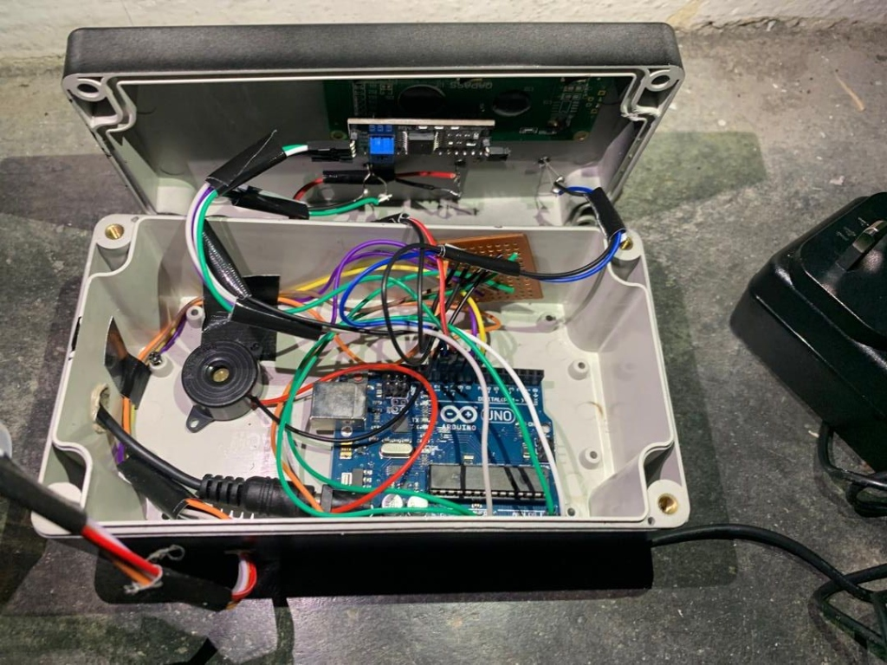
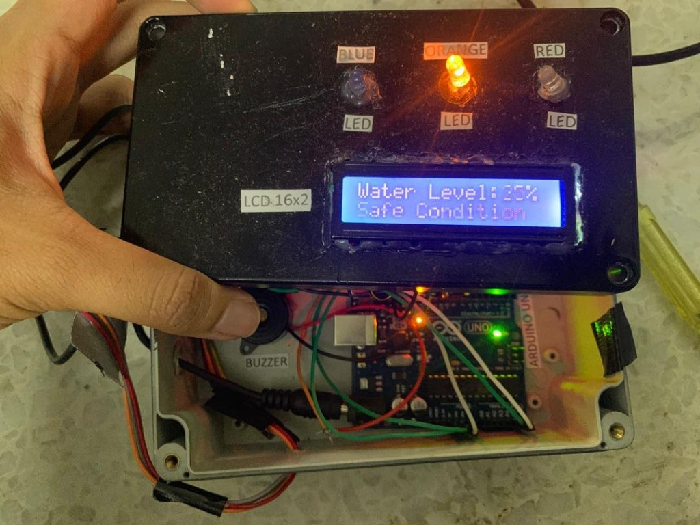

What the Project Does
This Internet of Things (IoT) prototype acts as a local early warning system to monitor rising water levels and prevent flash flood casualties. Traditional weather forecasting registers rain totals but cannot predict rapid storm drainage overflow in residential areas. Using an array of liquid sensors connected to a centralized processing block, this microcontroller system provides visual, textual, and acoustic emergency signals to residents in real-time.
- Continuous Water Level Tracking: Measures depth inside drainage nodes or containment basins utilizing calibrated sensors.
- Tri-State Indicator Logic: Displays environmental risk level across Safe (Blue LED), Warning (Orange LED), and Emergency Danger (Flashing Red LED) triggers.
- Integrated Alarms & Telemetry: Features a 16x2 character liquid crystal display (LCD) for textual updates, alongside an high-decibel piezoceramic buzzer triggered by critical level bounds.
- Embedded Fail-Safes: Uses non-blocking loops to maintain LCD polling frequency and active buzzer pulse intervals concurrently without system freeze.
Interactive IoT System Simulator
Drag the depth slider to raise the water level and observe the real-time response of the Arduino system, character LCD display, indicating LEDs, and warning sound alarm (Web Audio API synthetic buzzer).
DANGER (80%)
WARNING (50%)
Depth: 20%
Water Level: 20%
Safe Condition
Hardware Architecture & Prototype Assembly
The system is divided into two primary sub-assemblies: the sensor tank unit and the watertight electronics control housing. The circuit is designed to handle multiple analog and digital feedback sensors with isolated pull-down structures to prevent current leakage and sensor corrosion.

Control Box Internal Electronics
Arduino Uno R3 mainboard wired to I2C LCD lines, custom solder prototype boards, discrete resistors, and an active high-decibel piezoceramic warning buzzer. Jumper lines are bundle-tied to prevent mechanical shear.

Physical System Integration & LCD Test
Completed control box faceplate under test. Shows the blue back-lit 16x2 character LCD displaying custom textual status (e.g. Water Level: 20% Safe Condition), alongside indicating LED sockets.
Key Learnings & Insights
- Sensor Calibration & Signal Filtering: Learned how to filter high-frequency noise from ultrasonic and liquid depth sensors using simple moving average algorithms in C++ to avoid false alarms.
- Non-Blocking Task Execution: Implemented timing checks using
millis() instead of standard blocking delay() functions. This guarantees that the LEDs can flash and the buzzer can pulse while the LCD is continuously writing updates.
- Input Overvoltage Protection: Configured pull-down arrays on sensor inputs to prevent floating voltage readings from water conduction, which can cause reading deviations.
- Prototyping Watertight Closures: Gained experience designing and drilling compact modular layouts inside watertight industrial boxes, separating high-humidity containers from sensitive microcontroller boards.